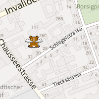
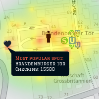
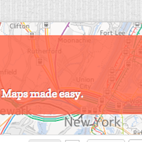

HERE Winter Hackathon
Join us and many other web and maps geeks for a day full of geo-hacking with all the HERE APIs.
If you want to have a look at our APIs in advance, just visit developer.here.net. If you have questions, don't hesitate to contact us.
Bring your laptop and be ready for lots of fun. We'll have some mobile devices for testing and some other hardware.
Venue
The event will be hosted at Nokia House 1, Invalidenstraße 116, Berlin.
You can get there with the U6 to Naturkundenmuseum or M8, M12, S2, S25 and S1 to Nordbanhof. Toggle public transport on the map.
Registration
Note: Registration closes on the evening of Tuesday 15th. The Hackathon is Saturday 19th.
Get Involved
If you have an idea that just can't wait, why not add it to our Ideas Page?
Just to give you some inspiration, here are a few things we hacked together in the past:
- Soundscape
-  Explore the world of sound and music. This little application uses the Web Audio API together with the freesound.org and Deezer APIs to create an immersive, directional soundscape of a city. Fly around and discover the sounds of upcoming gigs or the atmosphere in a local park.
- Neighborhood Hangouts
-  Uses the Foursquare API and heatmaps to visualize on the map the areas where your neighbors like to hang out and the spots that people like the most in your neighborhood.
- jHERE
-  A jQuery plugin that make maps super simple. jHERE relies on the HERE APIs and provides a simple but powerful API to add interactive maps to your website. jHERE supports extensions for geocoding and routing, and you can build extensions too!
Build an app for Windows Phone, get a Lumia
Here is the challenge: build a cool and complete Windows Phone 8 application during the hackathon and you get a Lumia that you can take home and use for development for at least one year.
More details about this challenge will be published in the next few days. In the meanwhile check out the official website of the initiative for Germany.
Schedule
- Doors Open
- Breakfast and Networking
- Welcome and Presentation of Ideas
- Hacking session begins
- Lunch Break
- Demos
- Afterparty
Contacts
You can get in touch with us via Twitter, or by email at herehacks (at) nokia (dot) com.
Connect
Follow @herehacks on Twitter for the latest news about the event and connect with the other attendees on Lanyrd.